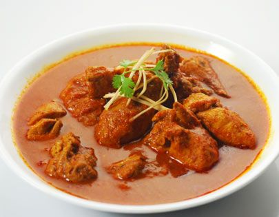

Chicken / Turkey -1 lb (1/2 kg)
Onion - 1 big (cut lengthwise)
Tomato - 2 (diced or pureed)
Ginger garlic paste - 1 tsp
Chicken masala - 1 tbsp
Salt - to taste
Oil - 2 tbsp
Cumin seeds - ¼ tsp
Coriander leaves - handful (for garnishing)
Chilly powder - 2 tsp
Coriander powder - 2 tsp
Turmeric powder - ¼ tsp
Ginger Garlic Paste - 1/4 tsp
Lemon juice - 2 tsp
Salt - ½ tsp
Coconut grated - 3 tbsp
Shallots (Pearl onions, Sambhar Onions) - 4
Curry leaves - 6
Dry red chillies - 3
Whole Peppercorns - 2 tsp
Fennel Seeds - 1 tsp
Whole Garam Masala - 1 cinnamon, 3 cloves, 3 cardamom
Wash and cut chicken (or turkey) in small size pieces.
Take a deep bowl mix chilly powder, coriander powder, turmeric powder, salt, garam masala, ginger garlic paste, lemon juice and make a paste.
Add chicken (or turkey) pieces to this and rub to coat the masala to all sides of chicken. Let this marinate for at least half an hour in the refrigerator.
Now heat oil in a kadai or deep sauce pan and fry the ingredients under 'To Grind' on medium flame for about 1 minute or until it turns brown and gives out a nice aroma.
After it cools grind it into a fine paste with little water. (If you are in a hurry, You can grind these without frying.)
Now take the same kadai, heat some oil, add cumin seeds and curry leaves and let it splutter.
Add onions and fry for few minutes till it browns.
Next add the ginger-garlic paste and saute until the raw smell vanishes.
Now add the tomato paste and saute until everything becomes a paste.
Add the coconut paste, required salt and chicken masala.
Now add the marinated chicken and fry it for 2 minutes.
Add required quantity of water.
Cover and cook for 15 minutes until the chicken is thoroughly cooked. Simmer for few minutes till oil floats on top.
Garnish with coriander leaves and split chillies.